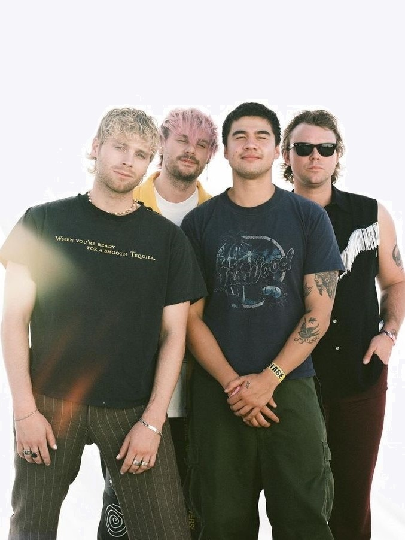
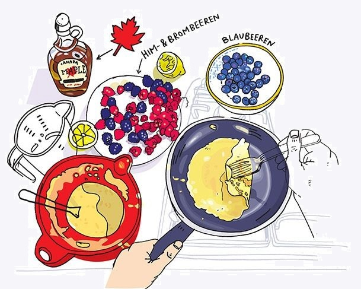

Durante a pandemia comecei a ler livros online e durante esses 4 anos li cerca de 250 livros.

Desde muito pequena a música sempre foi presente na minha vida e é uma parte essencial do meu dia.

Assistir series e filmes é um dos meus hobbies favoritos, com temas que variam de comedias romanticas a terror.
Sempre gostei de cozinhar, e minha especialidade é fazer doces.
The sims 4 é meu jogo favorito, que jogos a muito tempo.